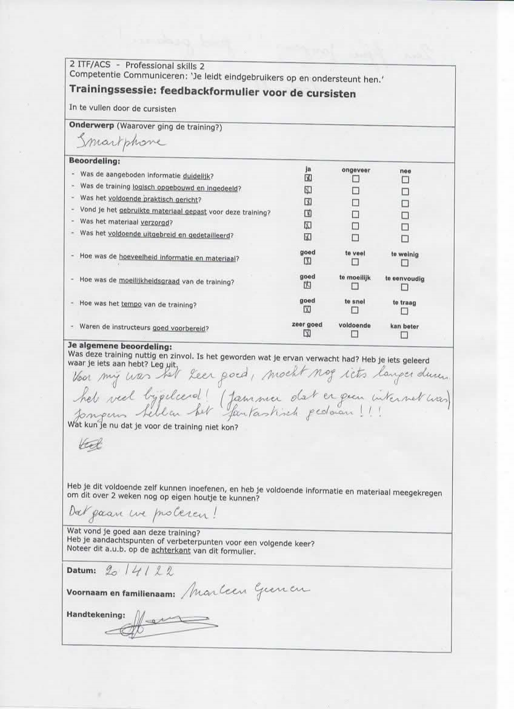
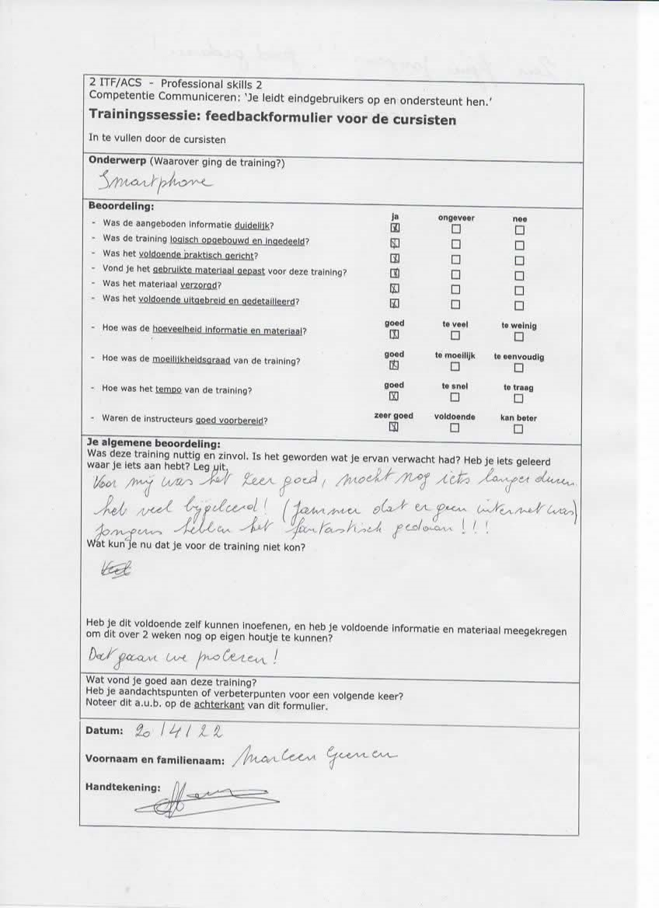

Jetze Luyten
Welcome to my portfolio!
Introduction
Get a coffee and stay a while! This portfolio consists of 5 sections: Home, About me, Internship, Projects and Contact. Each section includes an introduction.
About me
This section provides you with information about me together with my acquired skills. At the end of this section, there is a button to easily download my resume.
My Technical Skills
My Soft Skills
Download my Resume
Internship
Upgrade of control programme for the POSEIDON silicon irradiation facility
My internship started the 27th of February 2023 and ended the 26th of May 2023.
Before diving into the results of my internship, a short introduction about SCK CEN is in order. SCK CEN is a company
located in Mol that researches nuclear waste and is a global leader in nuclear research, services and education.
SCK CEN has an ICT-division that aims to improve work inside as well as outside the company.
As thousands of documents are present in this company that need to be stored,
Alexandria was developed which is a site that can hold all these documents.
It is due to people having trouble with finding and downloading these documents,
an application was created to streamline this process by letting the user choose a directory
and easily provide them with all the documents that accompany this directory.
This is called Critical Documents Synchronisation Tool or CDST.
CDST had a few issues. Some of these were:
- Documents get copied instead of downloaded
- Tool crashes with weird character in the name
- Errors were unclear
- Stopping of automatic download happens instantly
These issues were the topic of my internship as it was my job to try and fix these.
This project consisted of multiple phases, the first of which was checking the old code. After this,
small bugs, such as changing the downloaded document’s name, were fixed. Then,
I changed the old code so that the documents get downloaded instead of copied.
Finally, I added some quality of life items such as alerting the user when an error occurred.
Below you can find supporting documents from my internship:
Project realization: Click here to download my project realization
Project plan: Click here to download my project plan
Reflection: Click here to download my reflection
Alexandria Workflow: Click here to download Alexandria Workflow
Below you can find a video showing the working project:
Projects
This section is all of the projects that I was part of with some explanation in each project.

LDC Luysterbos Training
On Wednesday the 20th of April 2022 I gave a training regarding smart-phones and social media to 8 elderly people for Professional Skills
LDC Luysterbos is a service center in Geel that helps elderly people and people who have financial issues.
I did this project with 2 others: Moussa Marmouch and James Ceesay.
The preparation
To start I asked one of my colleagues to send a mail to our contact (who was Irmgard Schelles) for information regarding a training session that they asked for.
My colleague James sent a mail to our contact, and she responded saying that it's good that we wanted to do this training session/info session and that we have to contact her colleague Ellen Lievens.
I sent a mail to Ellen, asking her what date and time she wanted us to do the info session and if we could meet somewhere in advance to see what they expect from us.
She replied that she needed data so that she can publish when we were going to organize said session. She also said that on the 24th of May, around 13.30, she could meet us in advance.
The 24th of May rolled around, and we talked with Ellen about when we/they wanted the session to be. She said that we needed to send her information when we are available.
Later in the day I sent a mail to her saying that we could do it from the 4th of April until the 17th and only on Mondays (because none of us had a class then).
She said that it couldn't work during Easter, but that it can work on the 20th of April. She asked if that was OK with us. We said that it was fine.
After all the mails, my colleagues and I started our PowerPoint and figuring out what we are going to talk about.
We made our PowerPoint, and we were ready for the session.
The info session
The info session rolled around, and we arrived a bit earlier than we needed to (I arrived at 12.50 and James was already there, Moussa came a few minutes after I arrived).
We entered the service center and asked around for Ellen Lievens, but she wasn't in because her son was sick, so her colleague Martine Engelen showed us to the meeting room we were supposed to use.
After hooking one of our laptops to the screen in the meeting room, we were waiting for our course participants.
After some course participants arrived, they asked us if we could help them with some technical issues they were having with their smartphones.
Next we started our presentation with the intro and whatsapp. After we were done with whatsapp, we asked our participants if they have any questions or problems. We solved those problems.
After this, we talked about facebook and asked if our participants had any problems or questions regarding this topic.
Thereafter, we talked about smartphones and asked if anyone had any problems or questions.
We ended our presentation with some terminology of smartphones. And after that, we asked them to fill in some paperwork.
Conclusion
I have learned that elderly people are smarter than I expected.
Giving an info session was pretty fun, and I want to do it again.
Attachments
Here are some of the files our participants had to fill in.
Evaluation form
Feedback forms
 



Some Fun Facts
Here are some fun facts about my stay at Thomas More (Geel)! Note that not all of my projects are listed in this portfolio due to those projects missing evidence.
Lines code written
Projects Completed
Cups of coffee consumed
Contact
These are ways to contact me!
My Address
- Greesstraat 30, 2400 Mol
- 0490 43 72 55
- jetze.luyten@hotmail.com
Join Me
This section is all about my social network and ways to contact me, so follow me on my social networks!